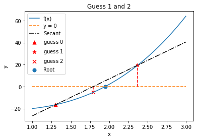

More Newton-Type Methods
Contents
5.3. More Newton-Type Methods¶
5.3.1. Learning Objectives¶
After studying this notebook, completing the activities, and asking questions in class, you should be able to:
Apply Inexact Newton’s Method using a finite difference formula.
Understand and generalize Secant Method.
import numpy as np
import matplotlib.pyplot as plt
5.3.2. Inexact Newton¶
What if we do not know the derivative of the function? We can do what is called inexact Newton and estimate the derivative using a finite difference formula:
which will converge to the derivative as \(\delta \rightarrow 0\). Indeed, the limit of this approximation as \(\delta \rightarrow 0\) is the definition of a derivative. To implement this we need to only make a small change to the code to estimate the derivative instead of calling a derivative function. The downside is that we need an extra function evaluation to estimate the derivative.
Home Activity
Finish the function below. Hint: You’ll find the formula above helpful.
def inexact_newton(f,x0,delta = 1.0e-7, epsilon=1.0e-6, LOUD=False,max_iter=50):
"""Find the root of the function f via Newton-Raphson method
Args:
f: function to find root of [function]
x0: initial guess [float]
delta: finite difference parameter [float]
epsilon: tolerance [float]
LOUD: toggle on/off print statements [boolean]
max_iter: maximum number of iterations [int]
Returns:
estimate of root [float]
"""
assert callable(f), "Warning: 'f' should be a Python function"
assert type(x0) is float or type(x0) is int, "Warning: 'x0' should be a float or integer"
assert type(delta) is float, "Warning: 'delta' should be a float"
assert type(epsilon) is float, "Warning: 'eps' should be a float"
assert type(max_iter) is int, "Warning: 'max_iter' should be an integer"
assert max_iter >= 0, "Warning: 'max_iter' should be non-negative"
x = x0
if (LOUD):
print("x0 =",x0)
iterations = 0
converged = False
# Check if the residual is close enough to zero
while (not converged and iterations < max_iter):
# evaluate function 'f' at new 'x'
fx = f(x)
# calculate 'slope' (hint: use formula above)
# Add your solution here
if (LOUD):
print("x_",iterations+1,"=",x,"-",fx,"/",slope,"=",x - fx/slope)
x = x - fx/slope
iterations += 1
# check if converged
if np.fabs(f(x)) < epsilon:
converged = True
print("It took",iterations,"iterations")
if not converged:
print("Warning: Not a solution. Maximum number of iterations exceeded.")
return x #return estimate of root
5.3.3. Unit Test¶
Home Activity
Now test your code using the unit test below. Then speculate as to how many times your code evaluated the nonlinear function.
First, run the next cell with the nonlinear function we used in the previous notebook:
def nonlinear_function(x):
''' compute a nonlinear function for demonstration
Arguments:
x: scalar
Returns:
c(x): scalar
'''
return 3*x**3 + 2*x**2 - 5*x-20
root = inexact_newton(nonlinear_function,-1.5,delta = 1.0e-7, epsilon=1.0e-6, LOUD=True,max_iter=15)
x0 = -1.5
x_ 1 = -1.5 - -18.125 / 9.249998846883045 = 0.45945970372823863
x_ 2 = 0.45945970372823863 - -21.58411181208517 / -1.2622315992416588 = -16.640501844574604
x_ 3 = -16.640501844574604 - -13206.564357107398 / 2420.594719296787 = -11.184584647108327
x_ 4 = -11.184584647108327 - -3911.2918349345796 / 1076.1160501715494 = -7.54994706846515
x_ 5 = -7.54994706846515 - -1159.3263333064642 / 477.81551529624267 = -5.123641734726272
x_ 6 = -5.123641734726272 - -345.39137036052114 / 210.77077121844923 = -3.4849355309967853
x_ 7 = -3.4849355309967853 - -105.25705162502234 / 90.36323575628558 = -2.320113900340418
x_ 8 = -2.320113900340418 - -35.10059526280932 / 34.16589905214096 = -1.2927563234406585
x_ 9 = -1.2927563234406585 - -16.675217007438032 / 4.869943950325251 = 2.1313522859252334
x_ 10 = 2.1313522859252334 - 7.47460644110005 / 44.40937431127168 = 1.9630408301341777
x_ 11 = 1.9630408301341777 - 0.5857605234894905 / 37.533928995969745 = 1.9474346695440516
x_ 12 = 1.9474346695440516 - 0.004778659540754404 / 36.92225675422378 = 1.9473052446399195
It took 12 iterations
Notice that we get the same answer and it took the same number of iterations as newton from the previous notebook.
# Removed autograder test. You may delete this cell.
Discussion Question: How many times did inexact_newton evaluate \(c(x)\) for the unit test above?
5.3.4. Secant Method¶
The secant method is a variation on the theme of Newton’s method. In this case we use the previous two guesses to construct the slope:
The benefit of this is that it does not require an additional function evaluation. This will be valuable if it takes a long time to do a function evaluation. One issue is that we need two points to get started. Therefore, we can use inexact Newton for the first step and then use secant from then on. Below is a graphical example.
Class Activity
With a partner, walk through the example below. Flip a figurative coin to decide who is “Partner A” and who is “Partner B”.
5.3.5. Iteration 1¶
Inexact Newton Step
Np = 100
X = np.linspace(1,3,Np)
plt.plot(X,nonlinear_function(X),label="f(x)")
guess = 1.3
print("Initial Guess =",guess)
slope = (nonlinear_function(guess) - nonlinear_function(guess-.0001))/(.0001)
plt.plot(X,0*X,"--",label="y = 0")
plt.plot(X,nonlinear_function(guess) + slope*(X-guess),'k-.', label="Tangent at guess")
plt.plot(np.array([guess,guess]),np.array([0,nonlinear_function(guess)]),'r--')
plt.scatter(guess,nonlinear_function(guess),label="guess 0",c="red", marker="^", s=50)
new_guess = guess-nonlinear_function(guess)/slope
plt.scatter(new_guess,nonlinear_function(new_guess),marker="*",label="guess 1",c="red", s=50)
plt.plot(np.array([new_guess,new_guess]),np.array([0,nonlinear_function(new_guess)]),'r--')
plt.scatter(1.94731,0,label="Root", s=50)
plt.legend(loc="best")
plt.xlabel("x")
plt.ylabel("y")
plt.title("Guess 0 and 1 (Same as Newton)")
plt.savefig("Secant-Methods1.pdf")
plt.show()
Initial Guess = 1.3

Class Activity
Partner A: Describe in a few sentences the lines and points on the plot. What are the most important features?
5.3.6. Iteration 2¶
Secant Method
old_guess = guess
guess = new_guess
print("Guess 1 =",guess)
slope = (nonlinear_function(guess)-nonlinear_function(old_guess))/(guess - old_guess)
plt.plot(X,nonlinear_function(X),label="f(x)")
plt.plot(X,0*X,"--",label="y = 0")
plt.plot(X,nonlinear_function(old_guess) + slope*(X-old_guess),'k-.', label="Secant")
plt.plot(np.array([guess,guess]),np.array([0,nonlinear_function(guess)]),'r--')
plt.scatter(old_guess,nonlinear_function(old_guess),label="guess $0$",c="red", marker="^", s=50)
plt.scatter(guess,nonlinear_function(guess),marker="*",label="guess $1$",c="red", s=50)
new_guess = guess-nonlinear_function(guess)/slope
print("Guess 2 =",new_guess)
plt.scatter(new_guess,nonlinear_function(new_guess),marker="x", label="guess $2$",c="red", s=50)
plt.plot(np.array([new_guess,new_guess]),np.array([0,nonlinear_function(new_guess)]),'r--')
plt.scatter(1.94731,0,label="Root", s=50)
plt.legend(loc="best")
plt.xlabel("x")
plt.ylabel("y")
plt.title("Guess 1 and 2")
plt.savefig("Secant-Methods2.pdf")
plt.show()
Guess 1 = 2.3727105503764285
Guess 2 = 1.7925464201668238

Class Activity
Swith roles! Partner B: Describe in a few sentences the lines and points on the plot. What are the most important features?
5.3.7. Secant Method Algorithm¶
We can now generalize the secant method (similar to inexact Newton).
Class Activity
Run the code below.
def secant(f,x0,delta = 1.0e-7, epsilon=1.0e-6, LOUD=False):
"""Find the root of the function f via Newton-Raphson method
Args:
f: function to find root of
x0: initial guess
delta: finite difference parameter
epsilon: tolerance
Returns:
estimate of root
"""
x = x0
if (LOUD):
print("x0 =",x0)
#first time use inexact Newton
x_old = x
fold = f(x_old)
fx = fold
slope = (f(x_old+delta) - fold)/delta
x = x - fold/slope
if (LOUD):
print("Inexact Newton\nx_",1,"=",x,"-",fx,"/",slope,"=",
x - fx/slope,"\nStarting Secant")
fx = f(x)
iterations = 1
# now switch to secant method
while (np.fabs(fx) > epsilon):
# recall fx, x correspond with the last point,
# fold, and x_old correspond to the 2nd to last point
### SWITCH ROLES. Discuss this line in depth.
slope = (fx - fold)/(x - x_old)
# switch the history. overwrite fold with fx, etc.
fold = fx
x_old = x
if (LOUD):
print("x_",iterations+1,"=",x,"-",fx,"/",slope,"=",x - fx/slope)
# calculate new point
x = x - fx/slope
# evaluate function f at new point
fx = f(x)
iterations += 1
print("It took",iterations,"iterations")
return x #return estimate of root
Class Activity
As a class, discuss the output below.
root = secant(nonlinear_function,-1.5,LOUD=True)
x0 = -1.5
Inexact Newton
x_ 1 = 0.45945970372823863 - -18.125 / 9.249998846883045 = 2.4189194074564773
Starting Secant
x_ 2 = 0.45945970372823863 - -21.58411181208517 / -1.7653396012704734 = -11.767146325248616
x_ 3 = -11.767146325248616 - -4572.272414110397 / 372.19554564146875 = 0.517451025937337
x_ 4 = 0.517451025937337 - -21.636092826944633 / 370.4343081984803 = 0.5758583935814591
x_ 5 = 0.5758583935814591 - -21.64317999154791 / -0.1213402501968484 = -177.79183045192954
x_ 6 = -177.79183045192954 - -16795875.77015077 / 94164.21906726681 = 0.5760882386351796
x_ 7 = 0.5760882386351796 - -21.643113428270524 / 94164.09772754615 = 0.5763180832782079
x_ 8 = 0.5763180832782079 - -21.643046105986738 / 0.29290342772317585 = 74.46772411503576
x_ 9 = 74.46772411503576 - 1249567.865555407 / 16911.161604699413 = 0.5775978916445297
x_ 10 = 0.5775978916445297 - -21.642657354146493 / 16911.454507939132 = 0.5788776548573265
x_ 11 = 0.5788776548573265 - -21.64224503667768 / 0.32218262307570056 = 67.7527209555017
x_ 12 = 67.7527209555017 - 941864.7106306882 / 14021.623694511605 = 0.5804211455049284
x_ 13 = 0.5804211455049284 - -21.641716329033667 / 14021.945876666903 = 0.5819645629820309
x_ 14 = 0.5819645629820309 - -21.64115322951504 / 0.36483940798894693 = 59.89889347919898
x_ 15 = 59.89889347919898 - 651585.9262034392 / 10985.18718453953 = 0.5839345934299374
x_ 16 = 0.5839345934299374 - -21.640384379585317 / 10985.552023102788 = 0.5859044884642584
x_ 17 = 0.5859044884642584 - -21.639559271520906 / 0.4188588985889314 = 52.249028620292705
x_ 18 = 52.249028620292705 - 433092.10681333265 / 8383.421514878402 = 0.5884857208683698
x_ 19 = 0.5884857208683698 - -21.638392636469074 / 8383.840372122675 = 0.5910666851611084
x_ 20 = 0.5910666851611084 - -21.63712890979904 / 0.48963353487352523 = 44.78152213545623
x_ 21 = 44.78152213545623 - 273179.4031658192 / 6182.354028960443 = 0.5945665055868687
x_ 22 = 0.5945665055868687 - -21.635259448485936 / 6182.843658968668 = 0.5980657464931308
x_ 23 = 0.5980657464931308 - -21.633210258063425 / 0.5856099872529278 = 37.539393129832206
x_ 24 = 37.539393129832206 - 161312.93332909865 / 4367.319150857592 = 0.6030191766205846
x_ 25 = 0.6030191766205846 - -21.63000019023632 / 4367.904752471265 = 0.6079712077238266
x_ 26 = 0.6079712077238266 - -21.62642671045242 / 0.7216190103409444 = 30.57728520935268
x_ 27 = 30.57728520935268 - 87463.6213838629 / 2919.1608391776494 = 0.6153796473069484
x_ 28 = 0.6153796473069484 - -21.62039576403625 / 2919.882435329779 = 0.6227841905524008
x_ 29 = 0.6227841905524008 - -21.61354115179509 / 0.9257305972747973 = 23.970333915517628
x_ 30 = 23.970333915517628 - 42327.70318272215 / 1813.8655757349295 = 0.6346999253460552
x_ 31 = 0.6346999253460552 - -21.600756475157773 / 1814.7912311717714 = 0.6466025376708958
x_ 32 = 0.6466025376708958 - -21.585799447975067 / 1.2566171840690419 = 17.824307666673082
x_ 33 = 17.824307666673082 - 17514.955818522834 / 1020.8896640310104 = 0.6677466438446622
x_ 34 = 0.6677466438446622 - -21.553746259007692 / 1022.1459616206222 = 0.6888334035329107
x_ 35 = 0.6888334035329107 - -21.51464740450111 / 1.854189789452258 = 12.292094044320228
x_ 36 = 12.292094044320228 - 5792.573771179393 / 501.07367218370007 = 0.7317704976147841
x_ 37 = 0.7317704976147841 - -21.41231327072709 / 502.9258965772664 = 0.7743459812326523
x_ 38 = 0.7743459812326523 - -21.279585781409114 / 3.1174628692243904 = 7.600276769849669
x_ 39 = 7.600276769849669 - 1374.5989113856463 / 204.49643285203462 = 0.8784044505400672
x_ 40 = 0.8784044505400672 - -20.815517686382446 / 207.59311733183154 = 0.9786752011021365
x_ 41 = 0.9786752011021365 - -20.165625265822577 / 6.4813758440710485 = 4.089993808596475
x_ 42 = 4.089993808596475 - 198.2589845333879 / 70.20322806963058 = 1.2659216115637957
x_ 43 = 1.2659216115637957 - -17.038356384386738 / 76.23648614365905 = 1.489415075733693
x_ 44 = 1.489415075733693 - -13.098196568846795 / 17.629865956816865 = 2.2323700477641055
x_ 45 = 2.2323700477641055 - 12.179989691888686 / 34.02384695219555 = 1.8743861399184727
x_ 46 = 1.8743861399184727 - -2.5893098299830726 / 41.25688110047803 = 1.9371468179173017
x_ 47 = 1.9371468179173017 - -0.373008559996471 / 35.313532942202336 = 1.9477095832063758
x_ 48 = 1.9477095832063758 - 0.01493056768908474 / 36.727042310296596 = 1.9473030552980586
x_ 49 = 1.9473030552980586 - -8.049694172029831e-05 / 36.92505317271554 = 1.947305235306882
It took 49 iterations
Secant is not quite as good as Newton (it took an additional iteration), but it does not need to know the derivative. Additionally, as mentioned above, there are fewer function evaluations (per iteration) than inexact Newton.